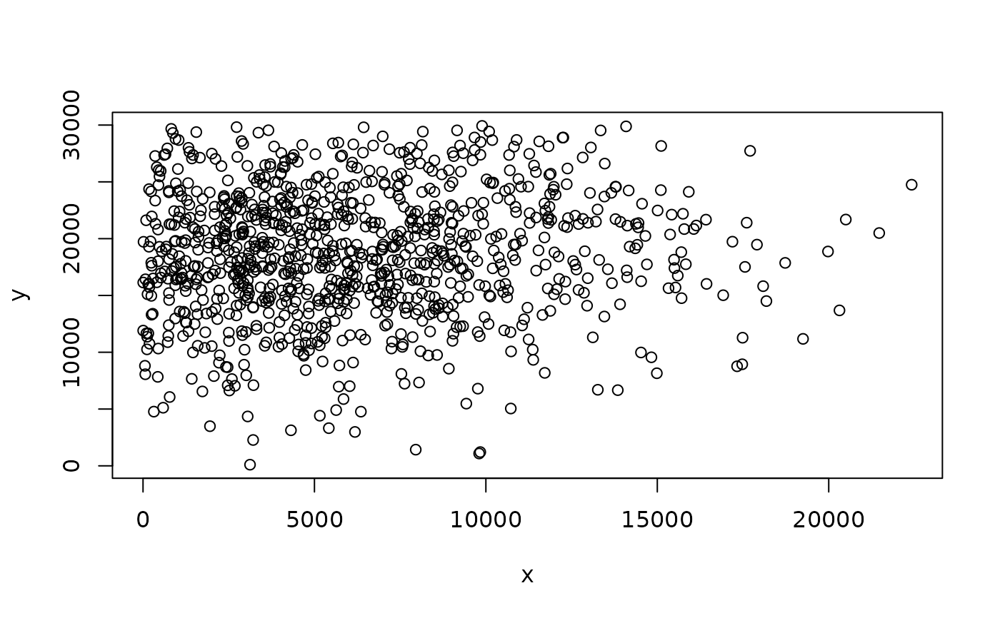
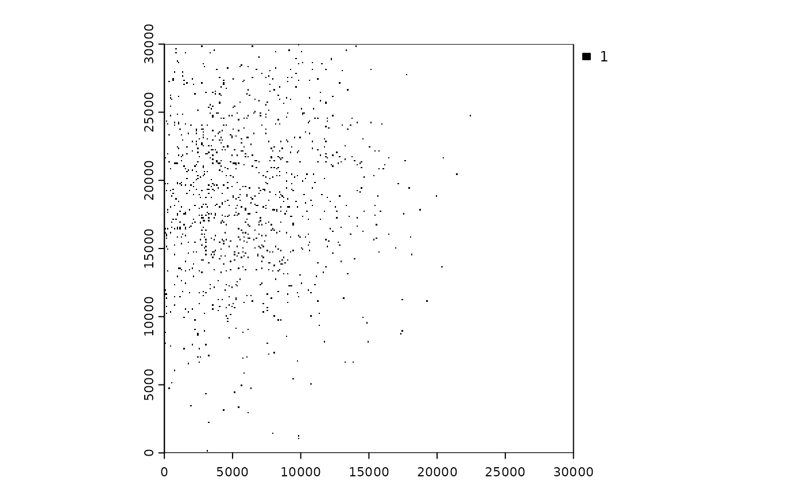
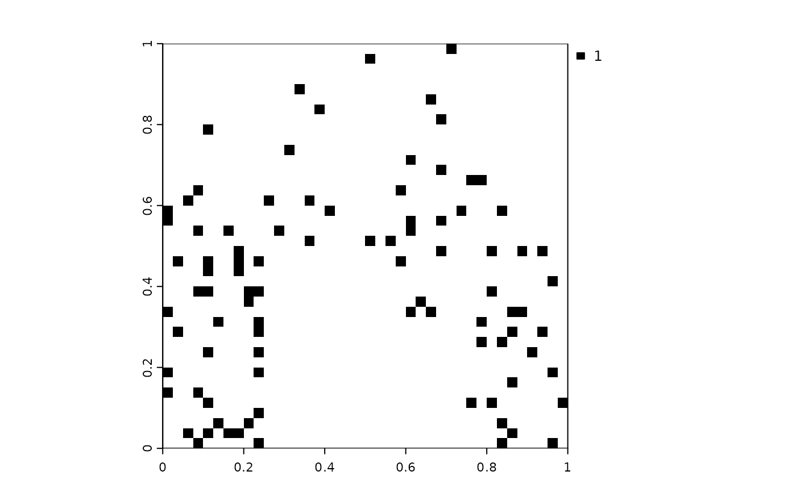
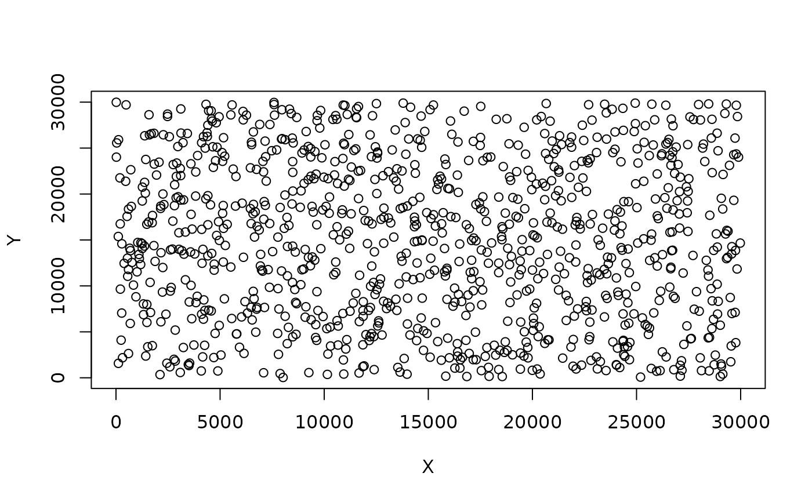
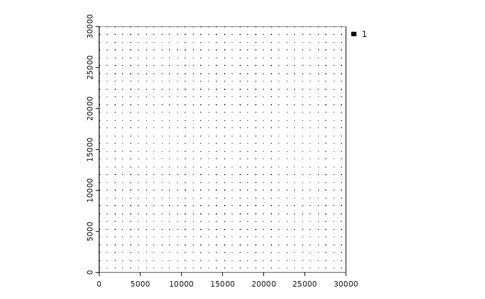
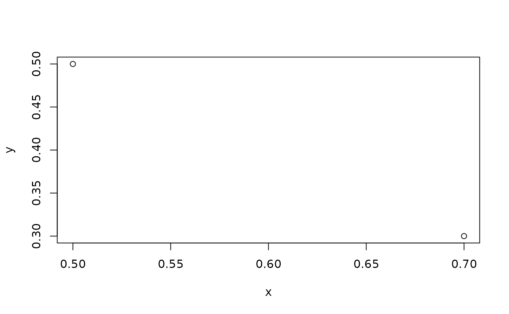
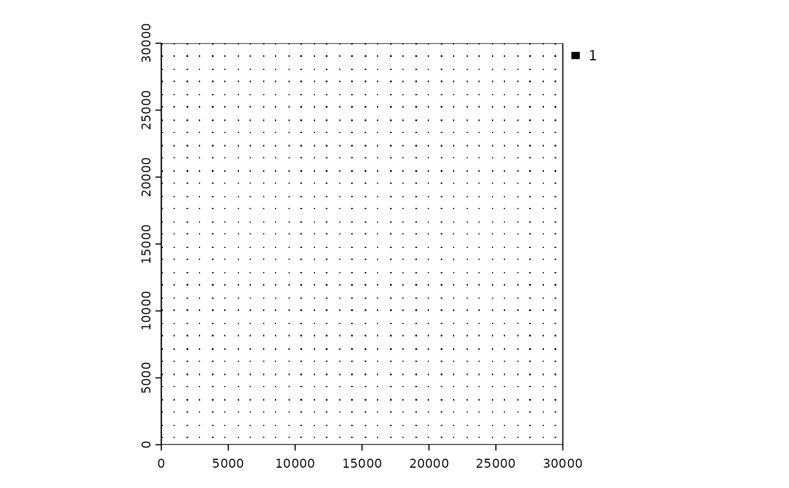
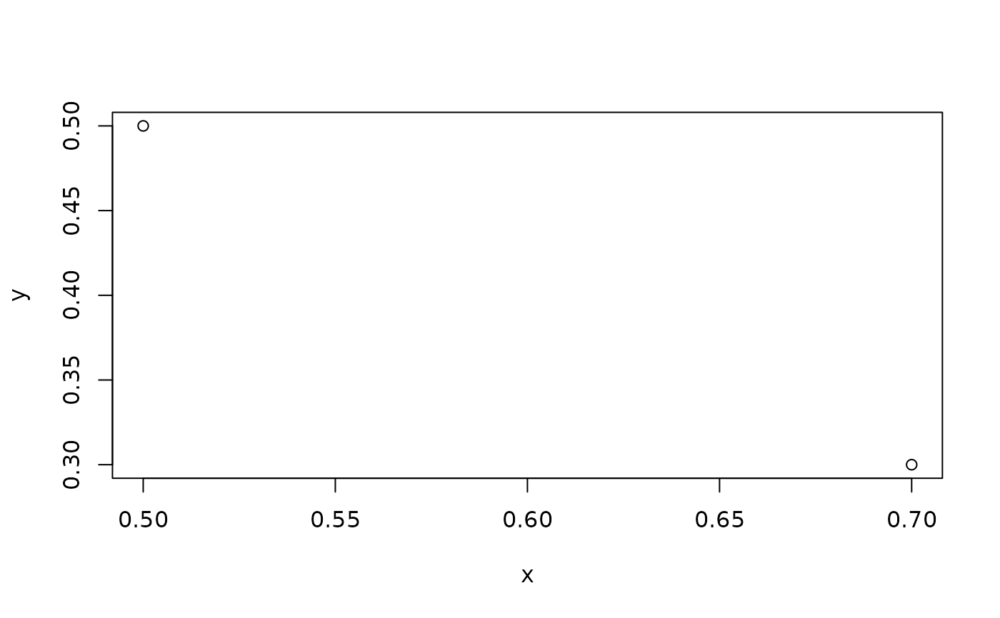

This function simulates point patterns in space and rasterize them. The idea is to mimic the spatial distribution of point-type infrastructure, such as houses, cabins, or turbines, for instance. The function returns a list with the position of the points and a binary raster with 1 where there are points and NA elsewhere. If created with a raster to define the weights, this base raster is also returned in the output.
Usage
set_points(
n_features = 1000,
method = c("mobsim", "regular", "random", "raster", "NLMR")[1],
centers = 1,
width = 0.05,
base_raster = NULL,
nlmr_function = "nlm_mpd",
point_coordinates = NULL,
res = 0.1,
extent_x = c(0, 1),
extent_y = c(0, 1),
buffer_around = 0,
return_base_raster = TRUE,
use_terra = TRUE,
crs = "",
...
)Arguments
- n_features
[integer(1)=1000]
Total number of features to spread in space.- method
[character(1)]{"mobsim", "regular", "random", "raster", "NLMR"}
Method used to simulate points in space.mobsimuses the functionmobsim::sim_thomas_community()from the mobsim package to simulate points.rasteruses a base raster map as input to define weights and simulate the random points.NLMRcreates a neutral landscape model using NLMR package and uses it as an input base raster. SeeDetailsfor more information.- centers
[integer(1)=1]
Number of centers around which the features will be placed. Used only ifmethod = "mobsim".- width
[numeric(1)=0.05]
Mean distance between each of the features in a cluster and the center of the cluster. Used only ifmethod = "mobsim".- base_raster
[RasterLayer=NULL]
Base raster to define weights for creating the random points. Used only ifmethod = "raster".- nlmr_function
[character(1)="nlm_mpd"]
Name of the function from NLMR package used to create the base raster, to be used to define weights for creating the random points. Used only ifmethod = "NLMR".- point_coordinates
[data.frame=NULL]data.framewith (x,y) columns with coordinates already taken from elsewhere. This option is intended for when the points' coordinates were already generated or taken from a real landscape. In this case, no points are simulated and they are just rasterized (so that distances or other derived variables might be calculated).- res
[numeric(1)=0.1]
Resolution of the output raster.- extent_x, entent_y
[numeric vector(2)=c(0,1)]
Vector representing the minimum and maximum extent in x and y within which the points should be placed, in the format c(min,max).- buffer_around
[numeric(1)=0.1]
Size of the buffer around the extent of the landscape, to avoid edge effects when calculating densities using neighborhood analysis.- return_base_raster
[logical(1)=TRUE]
Whether the base_raster should be returned in the output list. This isNULLformethod = "mobsim".- use_terra
[logical(1)=TRUE]
IfTRUE(default), therastelement created from the points is aSpatRasterobject fromterrapackage is created. IfFALSE, it is aRasterLayerfromrasterpackage is created.- crs
[character(1)]
Specification for the coordinate reference system of therastobject created from the points. Default is"+proj=utm +zone=1 +datum=WGS84".- ...
Other arguments passed as input to the NLMR functions, defined by the
nlmr_functionargument.
Value
A list with three elements: (1) pts, the coordinates (x,y) of the simulated points;
(2) rast, a binary raster containing the landscape, with 1 where there points and NA elsewhere;
(3) base_rast, the base raster used to weigh the simulation of points. If method = "mobsim"
or "regular" or "random", base_rast is NULL.
Details
If method = "mobsim", the function builds upon the function
mobsim::sim_thomas_community() from the mobsim
package. Originally the function is intended to simulate positions of multiple
species in the context of species abundance distribution studies, but it fits
well in case of a single species (or point patterns for a single type of feature).
In this case, the points are simulated based on the number of centers/patches of points
and their width.
If method = "raster", the function uses an input raster (defined by the argument
base_raster) to define the probabilities of setting a given point in a certain pixel
in space.
If method = "NLMR", the function also uses a raster to define the probabilities of
setting a given point in a certain pixel in space, but this raster is created with
a function from the NLMR package. The function name is defined by the argument
nlmr_function and its arguments must be defined as additional parameters to
set_points().
TO IMPROVE: implement rasterization with terra package
Examples
#-----
# using mobsim
library(terra)
library(mobsim)
#>
#> Attaching package: ‘mobsim’
#> The following object is masked from ‘package:oneimpact’:
#>
#> dist_decay
set.seed(1234)
# gradient distribution
ext <- 30000
wd <- ext/5
pts <- set_points(n_features = 1000, centers = 1,
width = wd, res = 100,
extent_x = c(0, ext), extent_y = c(0, ext))
plot(pts$pts)

plot(pts$rast, col = "black")

# one focus of features, with buffer around
wd <- ext/20
pts <- set_points(n_features = 1000, centers = 1,
width = wd, res = 100,
extent_x = c(0, ext), extent_y = c(0, ext),
buffer_around = 10000)
plot(pts$pts)
plot(pts$rast, col = "black")
#-----
# using base raster
# raster
set.seed(12)
r <- raster::raster(matrix(runif(12),3,4)) |>
raster::disaggregate(fact = 10)
# points from raster
pts <- set_points(n_features = 100, method = "raster",
base_raster = r)
plot(pts$base_rast)
plot(pts$pts)
plot(pts$rast, col = "black")

#-----
# using NLMR
library(NLMR)
# example NLM
set.seed(123)
ext <- 300
nlm1 <- NLMR::nlm_mpd(ext, ext, 100, roughness = .5)
#> Warning: nlm_mpd changes the dimensions of the RasterLayer if even ncols/nrows are choosen.
nlm1[] <- scales::rescale(exp(nlm1[]))
plot(nlm1)
# points
pts <- set_points(n_features = 1000, method = "raster",
base_raster = nlm1)
plot(pts$base_rast)

plot(pts$pts)
 plot(pts$rast, col = "black")
plot(pts$rast, col = "black")
 # OR we can do it directly
# points
ext <- 30000
pts <- set_points(n_features = 1000, method = "NLMR",
nlmr_function = "nlm_mpd",
roughness = .2,
res = 100,
extent_x = c(0, ext), extent_y = c(0, ext))
#> Warning: nlm_mpd changes the dimensions of the RasterLayer if even ncols/nrows are choosen.
plot(pts$base_rast)

plot(pts$pts)

plot(pts$rast, col = "black")
# OR we can do it directly
# points
ext <- 30000
pts <- set_points(n_features = 1000, method = "NLMR",
nlmr_function = "nlm_mpd",
roughness = .2,
res = 100,
extent_x = c(0, ext), extent_y = c(0, ext))
#> Warning: nlm_mpd changes the dimensions of the RasterLayer if even ncols/nrows are choosen.
plot(pts$base_rast)

plot(pts$pts)

plot(pts$rast, col = "black")
 #-----
# using random or regular
set.seed(123)
ext <- 30000
pts <- set_points(n_features = 1000, method = "random",
res = 100,
extent_x = c(0, ext), extent_y = c(0, ext))
plot(pts$pts)
#-----
# using random or regular
set.seed(123)
ext <- 30000
pts <- set_points(n_features = 1000, method = "random",
res = 100,
extent_x = c(0, ext), extent_y = c(0, ext))
plot(pts$pts)
 plot(pts$rast, col = "black")
pts <- set_points(n_features = 1000, method = "regular",
res = 100,
extent_x = c(0, ext), extent_y = c(0, ext))
plot(pts$pts)
plot(pts$rast, col = "black")
pts <- set_points(n_features = 1000, method = "regular",
res = 100,
extent_x = c(0, ext), extent_y = c(0, ext))
plot(pts$pts)
 plot(pts$rast, col = "black")
#-----
# using point coordinates as input
pt_input <- data.frame(x = c(0.5, 0.7), y = c(0.5, 0.3))
pts <- set_points(point_coordinates = pt_input)
plot(pts$pts)
plot(pts$rast, col = "black")
plot(pts$rast, col = "black")
#-----
# using point coordinates as input
pt_input <- data.frame(x = c(0.5, 0.7), y = c(0.5, 0.3))
pts <- set_points(point_coordinates = pt_input)
plot(pts$pts)
plot(pts$rast, col = "black")